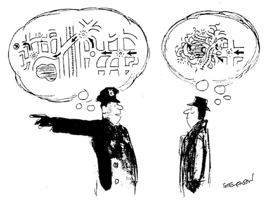

冲突，臆想与现实
王福强
大部分冲突都源于其中一方或者双方把自己的臆想当成现实！

故事是这样的：
说是有个人很气愤，在网上发了个帖子，声称看到一个老太太捡垃圾或者是拾荒的， 觉得很辛苦，就买了瓶矿泉水给她， 想让她解解渴。 但是老太太却把水倒了，放进了麻袋，还给了他一个白眼或者厌恶的表情。 整个事情让他很委屈，所以发个帖子找些安慰….
但问题的根源却在于， 整个事情只是他的一厢情愿， 他把自己的臆想当成了现实， 觉得事情就应该按照他的臆想去发展， 实际上不是这样，如果他能力了解真正的现实，以及对面人的臆想，或许就不会觉得自己委屈了。
为什么那？
老太太是捡垃圾或者拾荒的， 这个现实的背景下， 你给她一瓶矿泉水， 她的直觉肯定是， 你瓶子不要了。 但是，你tnd水都没倒，还没开封， 从老太太的角度臆想就是，这人真懒， 扔个瓶子都懒得扔到垃圾箱，直接看到我就给我让我帮他扔了， 而看到水没开封， 更认为，这人真浪费。 所以， 你看，这种臆想下， 老太太怎么会给他好脸色看那？
本质上是双方都是从自己的臆想出发，而不了解对方的动机和想法是什么， 觉得自己臆想的就是对的，就是现实在发生的。
所以说，很多人和人之间的冲突和不愉快，就是这么来的
问题是， 谁也不是谁肚子里的蛔虫不是吗？
有天早上我老婆饭桌上跟我说，“我想吃你做的豆腐…”, 因为我很久不掌勺做饭了，而我老婆嘴又刁（嗅觉和味觉都很灵敏那种）， 我之前做过几次菜都不符合她胃口， 所以，我就得先问问， “你是想吃干煎的，还是怎么做？”， 然后就看到我老婆脸直接就拉下来了， “中午叫外卖吧！”，搞得我丈二和尚摸不着头脑…
后来我想明白了， 我问她怎么做，她听了之后觉得我是在找各种理由不想做，因为在她那里，我就是个好吃懒做的主儿， 家务能不做就不做。而且， 她1年多前在老家吃过一顿我做的豆腐， 觉得我应该很清楚怎么做，可实际上我也只是临场发挥…
当她事后“冷却”之后， 我把我的这番琢磨跟她说了， 就换来了她不好意思的“嘿嘿”…
生活中， 琐事不断，冲突和不愉快自然也少不了， 因为每个人都有自己成长经历， 自然也就每个人都有自己的臆想，只要一方的臆想不照进现实，就有可能引发“世界大战”， 各位， 且行且珍惜吧！
「为AI疯狂」星球上，扶墙老师正在和朋友们讨论有趣的AI话题，你要不要⼀起来呀？^-^
这里
- 不但有及时新鲜的AI资讯和深度探讨
- 还分享AI工具、产品方法和商业机会
- 更有体系化精品付费内容等着你，加入星球(https://t.zsxq.com/0dI3ZA0sL) 即可免费领取。(加入之后一定记得看置顶消息呀！)

存量的时代，省钱就是赚钱。
在增量的时代，省钱其实是亏钱。
避坑儿是省钱的一种形式，更是真正聪明人的选择！
弯路虽然也是路，但还是能少走就少走，背后都是高昂的试错成本。
订阅「福报」，少踩坑，少走弯路，多走一步，就是不一样的胜率！